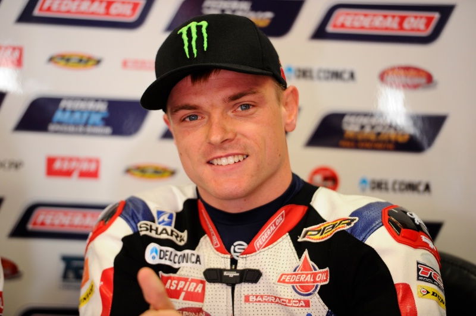
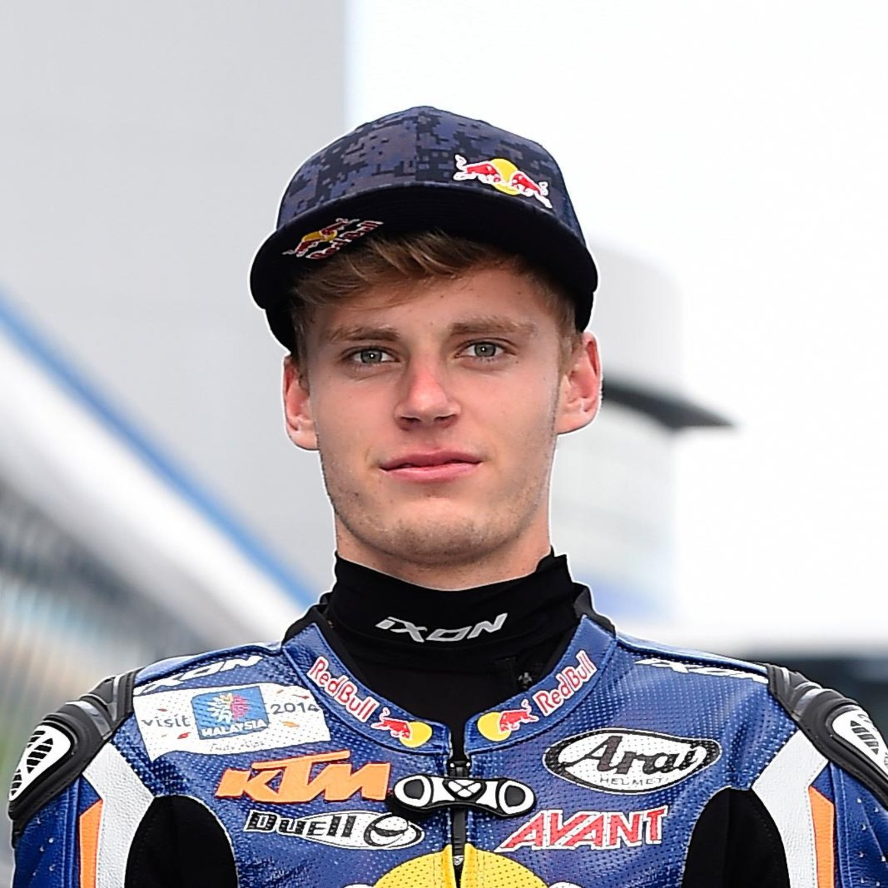

- Motogp-Victorias
- Motogp-Podios
- Moto2-Victorias
- Moto2-Podios
- Moto3-Victorias
- Moto3-Podios
- 250cc-Victorias
- 250cc-Podios
- 125cc-Victorias
- 125cc-Podios
- 350cc-Victorias
- 350cc-Podios
- 80cc-Victorias
- 80cc-Podios
- 50cc-Victorias
- 50cc-Podios
Los 10 pilotos con más victorias en MotoGP: Valentino Rossi en lo más alto.
| CON MÁS VICTORIAS EN MOTOGP/500CC | |||
| Pos | Piloto | Total | |
| 1 | Valentino ROSSI |  |
89 |
| 2 | Giacomo AGOSTINI |  |
68 |
| 3 | Marc MARQUEZ |  |
59 |
| 4 | Mick DOOHAN | 54 | |
| 5 | Jorge LORENZO |  |
47 |
| 6 | Casey STONER |  |
38 |
| 7 | Mike HAILWOOD |  |
37 |
| 8 | Dani PEDROSA |  |
31 |
| 9 | Eddie LAWSON | 31 | |
| 10 | Kevin_SCHWANTZ |  |
25 |
Los 10 pilotos de la historia de MotoGP con más podios: Rossi y el resto.
| PODIOS EN MOTOGP/500CC | |||
| Pos | Piloto | Total | |
| 1 | Valentino ROSSI | |
199 |
| 2 | Jorge LORENZO | |
114 |
| 3 | Dani PEDROSA | |
112 |
| 4 | Marc MARQUEZ | |
101 |
| 5 | Mick DOOHAN | 95 | |
| 6 | Giacomo AGOSTINI | |
88 |
| 7 | Eddie LAWSON | 78 | |
| 8 | Casey STONER | |
69 |
| 9 | Wayne RAINEY | 64 | |
| 10 | Andrea DOVIZIOSO |  |
62 |
Con más Victorias en Moto2: Marc Marquez en lo más alto de tabla.
| CON MÁS VICTORIAS EN MOTO2 | |||
| Pos | Piloto | Total | |
| 1 | Marc MARQUEZ | |
16 |
| 2 | Johann ZARCO |  |
15 |
| 3 | Esteve RABAT |  |
13 |
| 4 | Thomas LUTHI | 12 | |
| 5 | Pol ESPARGARO |  |
10 |
| 6 | Sam LOWES |  | 10 |
| 7 | Francesco BAGNAIA |  |
8 |
| 8 | Brad BINDER |  | 8 |
| 9 | Franco MORBIDELLI |  |
8 |
| 10 | Andrea IANNONE |  |
8 |
Los 10 pilotos de la historia de Moto2 con más podios: Thomas LUTHI y el resto.
| PODIOS EN MOTO2 | |||
| Pos | Piloto | Total | |
| 1 | Thomas LUTHI | 53 | |
| 2 | Esteve RABAT | |
33 |
| 3 | Johann ZARCO | |
30 |
| 4 | Sam LOWES | 26 | |
| 5 | Marc MARQUEZ | |
25 |
| 6 | Alex MARQUEZ |  |
23 |
| 7 | Pol ESPARGARO | |
23 |
| 8 | Miguel OLIVEIRA |  |
21 |
| 9 | Franco MORBIDELLI | |
21 |
| 10 | Augusto FERNANDEZ |  |
20 |
Con más victorias en Moto3: Romano FENATI en lo más alto.
| CON MÁS VICTORIAS EN MOTO3 | |||
| Pos | Piloto | Total | |
| 1 | Romano FENATI |  |
13 |
| 2 | Joan MIR |  |
11 |
| 3 | Dennis FOGGIA |  |
10 |
| 4 | Luis SALOM |  |
9 |
| 5 | Maverick VIÑALES |  |
8 |
| 6 | Alex RINS |  |
8 |
| 7 | Jorge MARTIN |  |
8 |
| 8 | Izan GUEVARA | 8 | |
| 9 | Danny KENT |  |
8 |
| 10 | Izan GUEVARA | 8 | |
Los 10 pilotos de la historia de Moto3 con más podios: Romano FENATI.
| PODIOS EN MOTO3 | |||
| Pos | Piloto | Total | |
| 1 | Romano FENATI | |
29 |
| 2 | Enea BASTIANINI |  |
24 |
| 3 | Alex RINS | |
23 |
| 4 | Dennis FOGGIA | |
23 |
| 5 | Maverick VIÑALES | |
22 |
| 6 | Brad BINDER | 20 | |
| 7 | Jorge MARTIN | |
20 |
| 8 | Luis SALOM | |
20 |
| 9 | Sergio GARCIA |  |
20 |
| 10 | Jaume MASIA |  |
19 |
Los 10 pilotos con más victorias en 250cc: Antong MANG en lo más alto.
| CON MÁS VICTORIAS EN 250cc | |||
| Pos | Piloto | Total | |
| 1 | Anton MANG |  |
33 |
| 2 | Max BIAGGI | 29 | |
| 3 | Phil READ |  |
27 |
| 4 | Luca CADALORA | 22 | |
| 5 | Mike HAILWOOD | |
21 |
| 6 | Walter VILLA |  |
20 |
| 7 | Jim REDMAN | 18 | |
| 8 | Jorge LORENZO | |
17 |
| 9 | Kork BALLINGTON |  |
17 |
| 10 | Carlos LAVADO |  |
17 |
Los 10 pilotos de la historia de 250cc con más podios: Anton MANG en lo más alto.
| PODIOS EN 250cc | |||
| Pos | Piloto | Total | |
| 1 | Anton MANG | |
60 |
| 2 | Max BIAGGI | 53 | |
| 3 | Tetsuya HARADA |  |
53 |
| 4 | Phil READ | |
50 |
| 5 | Jim REDMAN | 46 | |
| 6 | Sito PONS |  |
41 |
| 7 | Luca CADALORA | 39 | |
| 8 | Loris CAPIROSSI |  |
37 |
| 9 | Carlos LAVADO | |
36 |
| 10 | Ralf WALDMANN | 35 | |
Los 10 pilotos con más victorias en 125cc: Angel NIETO en lo más alto.
| CON MÁS VICTORIAS EN 125cc | |||
| Pos | Piloto | Total | |
| 1 | Angel NIETO |  |
62 |
| 2 | Carlo UBBIALI | 26 | |
| 3 | Pierpaolo BIANCHI |  |
24 |
| 4 | Luigi TAVERI |  |
22 |
| 5 | Fausto GRESINI |  |
21 |
| 6 | Hugh ANDERSON |  |
17 |
| 7 | Jorge MARTINEZ |  |
15 |
| 8 | Bill IVY |  |
14 |
| 9 | Kent ANDERSSON |  |
14 |
| 10 | Dirk RAUDIES |  |
14 |
Los 10 pilotos de la historia de 125cc con más podios: Angel NIETO en lo más alto.
| PODIOS EN 125cc | |||
| Pos | Piloto | Total | |
| 1 | Angel NIETO | |
85 |
| 2 | Luigi TAVERI | |
56 |
| 3 | Pierpaolo BIANCHI | |
56 |
| 4 | Carlo UBBIALI | 47 | |
| 5 | Fausto GRESINI | |
47 |
| 6 | Kazuto SAKATA |  |
41 |
| 7 | Eugenio LAZZARINI |  |
40 |
| 8 | Noboru UEDA |  |
39 |
| 9 | Nicolas TEROL |  |
34 |
| 10 | Kent ANDERSSON | |
32 |
Los 10 pilotos con más victorias en 350cc: Giacomo AGOSTINI en lo más alto.
| CON MÁS VICTORIAS EN 350cc | |||
| Pos | Piloto | Total | |
| 1 | Giacomo AGOSTINI | |
54 |
| 2 | Jim REDMAN | 21 | |
| 3 | Mike HAILWOOD | |
16 |
| 4 | John SURTEES |  |
15 |
| 5 | Kork BALLINGTON | |
14 |
| 6 | Geoff DUKE |  |
11 |
| 7 | Johnny CECOTTO |  |
9 |
| 8 | Anton MANG | |
8 |
| 9 | Fergus ANDERSON |  |
7 |
| 10 | Takazumi KATAYAMA | 7 | |
Los 10 pilotos de la historia de 350cc con más podios: Giacomo AGOSTINI en lo más alto.
| PODIOS EN 350cc | |||
| Pos | Piloto | Total | |
| 1 | Giacomo AGOSTINI | |
71 |
| 2 | Jim REDMAN | 26 | |
| 3 | Mike HAILWOOD | |
26 |
| 4 | Anton MANG | |
20 |
| 5 | John SURTEES | |
20 |
| 6 | Renzo PASOLINI |  |
19 |
| 7 | Kork BALLINGTON | |
18 |
| 8 | Geoff DUKE | |
17 |
| 9 | John HARTLE |  |
16 |
| 10 | Jonnie EKEROLD |  |
16 |
Los 10 pilotos con más victorias en 80cc: Jorge MARTINEZ en lo más alto.
| PODIOS EN 80cc | |||
| Pos | Piloto | Total | |
| 1 | Jorge MARTINEZ | |
22 |
| 2 | Stefan DÖRFLINGER |  |
9 |
| 3 | Gerhard WAIBEL | 3 | |
| 4 | Peter OETTL |  |
3 |
| 5 | Pierpaolo BIANCHI | |
3 |
| 6 | Herri TORRONTEGUI |  |
2 |
| 7 | Manuel HERREROS |  |
2 |
| 8 | Angel NIETO | |
1 |
| 9 | Gerd KAFKA |  |
1 |
| 10 | Ian McCONNACHIE |  |
1 |
Los 10 pilotos de la historia de 80cc con más podios: Jorge MARTINEZ en lo más alto.
| PODIOS EN 80CC | |||
| Pos | Piloto | Total | |
| 1 | Jorge MARTINEZ | |
34 |
| 2 | Stefan DÖRFLINGER | |
29 |
| 3 | Manuel HERREROS | |
21 |
| 4 | Gerhard WAIBEL | 10 | |
| 5 | Ian McCONNACHIE | |
7 |
| 6 | Alex CRIVILLE |  |
6 |
| 7 | Peter OETTL | |
6 |
| 8 | Hubert ABOLD |  |
5 |
| 9 | Pierpaolo BIANCHI | |
5 |
| 10 | Hans SPAAN | 4 | |
Los 10 pilotos con más victorias en 50cc: Angel NIETO en lo más alto.
| Victorias EN 50cc | |||
| Pos | Piloto | Total | |
| 1 | Angel NIETO | |
27 |
| 2 | Eugenio LAZZARINI | |
18 |
| 3 | Ricardo TORMO |  |
15 |
| 4 | Hans-Georg ANSCHEIDT |  |
14 |
| 5 | Jan DE VRIES |  |
14 |
| 6 | Stefan DÖRFLINGER | |
9 |
| 7 | Hugh ANDERSON | |
8 |
| 8 | Ernst DEGNER | |
7 |
| 9 | Henk VAN KESSEL |  |
7 |
| 10 | Ralph BRYANS | 7 | |
Los 10 pilotos de la historia de 50cc con más podios: Angel NIETO y el resto.
| PODIOS EN 50cc | |||
| Pos | Piloto | Total | |
| 1 | Angel NIETO | |
52 |
| 2 | Eugenio LAZZARINI | |
41 |
| 3 | Hans-Georg ANSCHEIDT | |
30 |
| 4 | Jan DE VRIES | |
27 |
| 5 | Stefan DÖRFLINGER | |
27 |
| 6 | Hugh ANDERSON | |
25 |
| 7 | Ricardo TORMO | |
25 |
| 8 | Rudolf KUNZ |  |
20 |
| 9 | Luigi TAVERI | |
17 |
| 10 | Henk VAN KESSEL | |
16 |